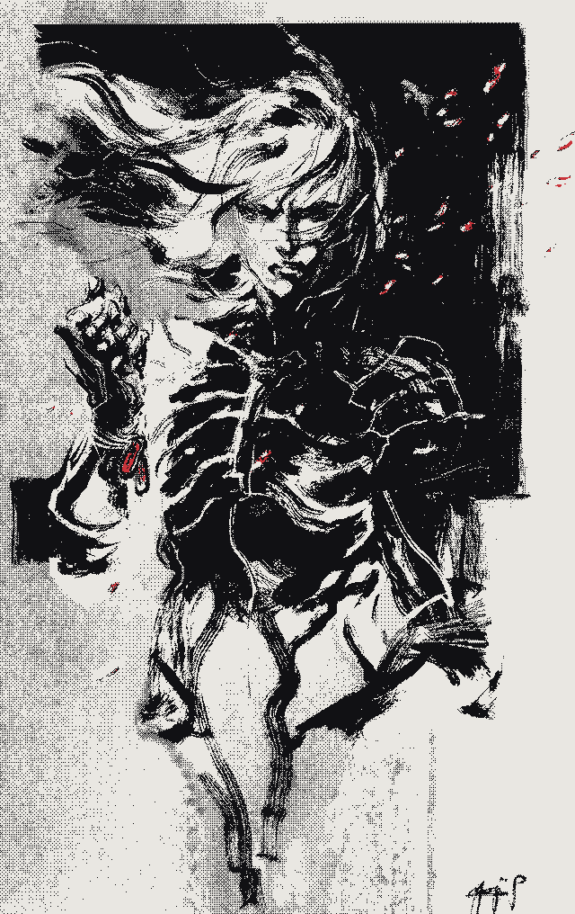

Teaching robots
to move, and to see.
Hector Lugo — MS Computer Science at UTRGV. Reinforcement learning, computer vision, and vision-language models for robotics.

Selected work
Three projects, then the rest in a list.
-

In progress · temporal logic · VLMs
Multi-Agent Neuro-Symbolic Video Search
A multi-agent system that searches asynchronous video streams: per-stream agents evaluate temporal-logic queries and a central orchestrator fuses their results against a global neuro-symbolic spec.
-

YOLOv8 · SORT · OpenCV
Real-Time Detection & Tracking
YOLOv8 detections feed a SORT tracker — Kalman-filter motion models matched by the Hungarian algorithm — holding unique per-object IDs across all 80 COCO classes, with FP16 GPU inference.
-

Decision Transformer · offline RL · ICICT 2025
Personalized Chemotherapy Dosing
A Decision Transformer learns personalized dosing from offline patient data — treatment planning framed as offline RL, conditioning each dose on the patient's evolving state. Published at ICICT 2025.
- 04
RL Isaac Lab Framework
A reinforcement-learning framework built on Isaac Lab for robotic simulation and training.
- 05
Signal Denoising — Idaho National Lab
A ResNet autoencoder denoises smart-grid sensor signals for anomaly detection, cutting training time by over 93% (30 days to 1–2 days).
- 06
Senior AE Project — RL Compression
Reinforcement learning for neural-network compression in resource-constrained environments.
- 07
Summer REU — Railway Systems
Spectral clustering on U.S. railway accident data at UC Riverside, identifying critical spatial safety zones.
- 08
Neon Grid
A walkable ASCII cyberpunk city in a single HTML file — a first-person raycaster with no engine, no libraries, no assets.
- 09
Chess-AlphaGO
AlphaZero-style self-play for Gardner chess (5×5) built on Pgx, with JIT-compiled rollouts on GPU in JAX.
- 10
Poker RL
A 6-max No-Limit Hold'em agent trained with PPO self-play against a pool of frozen snapshots.
Research & publications
Research assistant at the Machine Intelligence Lab, UTRGV, January 2023 to August 2026: hierarchical control for legged robots, with a VLM navigator commanding RL locomotion policies (Unitree Go2, G1 humanoid); Isaac Sim and MuJoCo environments and PPO locomotion and navigation policies for the Unitree Go2, including state autoencoders that cut compute cost and sped up training. Summer 2026 at the Air Force Research Laboratory: an open-sourced evaluation harness for multi-camera video QA — 650K+ scored answers across 3 benchmarks and 2 vision-language models (Qwen2.5-VL, InternVL3) on a multi-GPU SLURM cluster — with a manuscript in preparation.
- IEEE ICMLA 2026
Vision-Language Guided Quadruped Navigation with RL Control · accepted
- ICICT 2025
Personalized Chemotherapy Dosing Through Offline Reinforcement Learning
- ICICT 2025
Offline Reinforcement Learning Approaches for Safe and Effective Smart Grid Control
- ASME JRC 2024
About
ASCII portrait of Hector Lugo.
I'm Hector, a CS master's student at UTRGV. I work on getting robots to move and to understand what they're looking at: reinforcement learning for legged locomotion, computer vision, and vision-language models for navigation. Back at school I build RL pipelines in LocoMuJoCo and NVIDIA Isaac Sim and train locomotion policies meant to survive contact with real hardware. When I'm not training agents, I train myself: Taekwondo and hiking, slowly working up to summiting a real mountain.
Résumé ↗